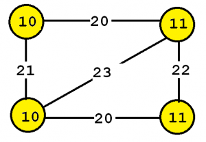
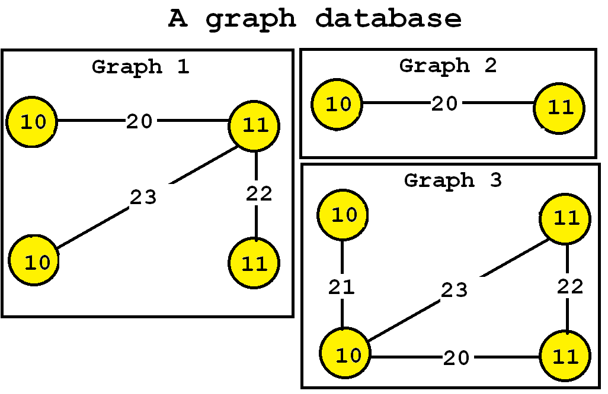
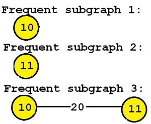
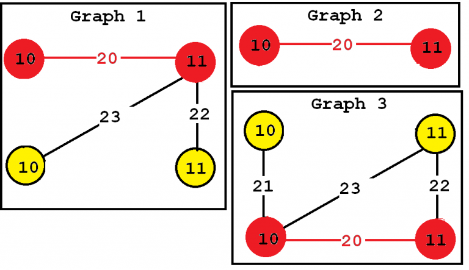
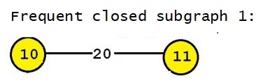
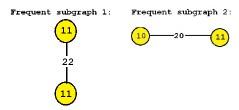
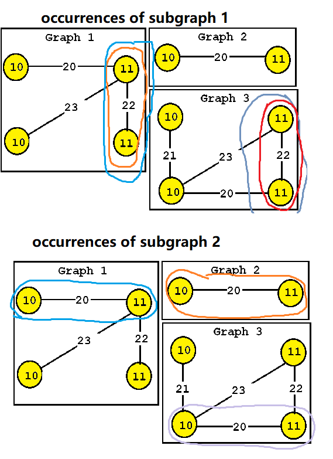
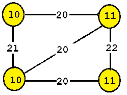
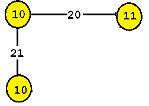
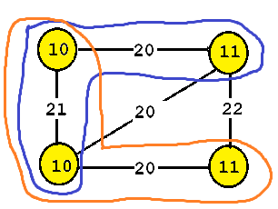

	<!doctype html>
	<html lang="en">
	  <head>
		<meta name="viewport" content="width=device-width, initial-scale=1.0"/>
		<meta http-equiv="Content-Type" content="text/html; charset=UTF-8" />
		<title>Example:  Mining Frequent Subgraphs using the cgSpan Algorithm   (SPMF - Java)</title>
		<link rel="stylesheet" href="docstyle.css"/>
	  </head>
	  <body>
		<div width="100%" class="container">
			  <div class="content">
				<!----------START------>
    <h2>Mining Frequent Closed Subgraphs in a Graph Database using the cgSpan algorithm (<a href="documentation.html">SPMF documentation</a>)</h2>
    <!-------------  (3) Change the name of the algorithm here: --------------------------------->
    <p>This page explains how to run the <strong>cgSPAN algorithm</strong>
      using the <a href="https://www.philippe-fournier-viger.com/spmf/">SPMF
        open-source data mining library</a>.</p>
    <!--------------(4) Insert the example here:------------->
    <h2><strong>What is this algorithm?</strong></h2>
    <p><strong>cgSpan </strong>is a fast algorithm for discovering <strong>frequent
        closed
        subgraphs</strong> either (1) in a <strong>graph database</strong> or (2) in <strong>a single large graph</strong>. The algorithm was proposed by Shaul et
        al. (2021). </p>
      <p>There are several algorithms for discovering<strong> frequent subgraphs</strong> such as <strong>gSpan </strong>and <strong>TKG </strong>to name a few. The
        advantage of <strong>cgSpan </strong>over traditional subgraph mining
        algorithms is that it finds only the<strong> frequent closed subgraphs</strong>. The
        closed subgraphs are interesting because they provide a summary of all
        frequent subgraphs that is often much smaller than the set of all
        subgraphs, and it can be shown that no information is lost. Moreover,
        mining frequent closed subgraphs can be much faster than mining all
        frequent subgraphs. <strong>cgSpan </strong>is one of the most
        efficient algorithms for mining closed subgraphs, and is based on gSpan.</p>
      <p>The implementation of cgSpan let you choose between two ways of counting the occurrences of subbgraphs. The first one is called is called &quot;support&quot; and is the traditional definition, used for mining subgraphs in a graph database. The second definition is the MNI support, which is adapted for mining subgraphs in a single large graph but can also be used for a graph database. Below, the two versions are described.</p>
      <h2 class="highlight">A) Example 1: Finding Subgraphs in a Graph Database using the traditional definition of support </h2>
      <h3><strong>How to run this example? </strong></h3>
      <p>If you want to mine patterns using the traditional definition of support in a graph database: </p>
    <ul>
      <li><strong>If you are using the graphical interface, </strong>(1) choose
        the <strong>&quot;<span class="highlight">CGSPANSupport</span>&quot;</strong> algorithm<strong>,
        </strong> (2) select the input file <strong>&quot;<span class="highlight">contextTKG.txt"</span></strong>,
        (3) set the output file name (e.g. "<span class="highlight">output.txt</span>")
        (4) set minsup to <span class="highlight">90% </span>and (5) click "<span

          class="highlight">Run algorithm</span>".</li>
      <li><strong>If you want to execute this example from the command line</strong>,
        then execute this command: <br>
        <span class="highlight"><strong>java -jar spmf.jar run CGSPANSupport contextTKG.txt
          output.txt 90%</strong></span><br> 
          in a folder containing <span class="highlight">spmf.jar</span>
        and the example input file <span class="highlight">contextTKG.txt</span>.</li>
      <li><strong>If you are using the source code version of SPMF, </strong>launch
        the file <strong><span class="highlight">"MainTestCGSPANSupport.java"</span></strong>
        in the package <span class="highlight"><strong>ca.pfv.SPMF.tests</strong></span>.      </li>
  </ul>
    <h3>What is the input of the algorithm?</h3>
    <p>The input is a <strong>set of</strong> <strong>labeled</strong> <strong>connected</strong>
        <strong>graphs</strong> and a threshold named <em><strong>minsup</strong></em>
        (a value between 0 and 100 %). Moreover, a few optional parameters can
        be set, which will be described further down this page. </p>
      <p>To explain the input more clearly, some definitions are first
        introduced. A&nbsp;<strong>labeled graph</strong>&nbsp;is a set of&nbsp;<strong>vertices</strong>&nbsp;and&nbsp;<strong>edges</strong>,
        having some&nbsp;<strong>labels</strong>. Let’s me illustrate this idea
        with an example. Consider the following graph:</p>
      <p></p>
      <p>This graph contains&nbsp;<strong>four</strong>&nbsp;<strong>vertices</strong>&nbsp;(depicted
        as yellow circles). These vertices have labels such as “10” and “11”.
        &nbsp;These labels provide information about the vertices. For example,
        imagine that this graph is a &nbsp;chemical molecule. The label 10 and
        11 could represent the chemical elements of Hydrogen and Oxygen,
        respectively. Labels&nbsp;do not need to be unique.&nbsp;In other words,
        the same labels may&nbsp;be used to describe several vertices in the
        same graph.&nbsp;For example, if the above graph represents a chemical
        molecule, the labels&nbsp;“10” and “11” could be used for all vertices
        representing Oxygen and Hydrogen, respectively.</p>
      <p>Now, besides vertices, a graph also contains&nbsp;<strong>edges</strong>.
        The edges are the lines between the vertices, here represented by thick
        black lines. &nbsp;Edges also have some labels. In this example, four
        labels are used, which are 20, 21, 22 and 23. &nbsp;These labels
        represents different types of relationships between vertices.&nbsp;Edge
        labels do not need to be unique. A graph is a&nbsp;<strong>connected
          graph</strong>&nbsp;if by following the edges, it is possible to go
        from any vertex&nbsp;to any other vertices.&nbsp;</p>
      <p>The goal of <strong>frequent subgraph mining </strong>is to
        discover&nbsp;<strong>interesting subgraph(s</strong>) appearing in
        a&nbsp;set of graphs (a graph database). But how can we judge if a
        subgraph is interesting? &nbsp;This depends on the application. The
        interestingness can be defined in various ways. Traditionally, a
        subgraph has been considered as interesting if it appears multiple times
        in a set of graphs.&nbsp;In other words, we want to discover subgraphs
        that are common to multiple graphs. This can be useful for example to
        find association between chemical elements common to several chemical
        molecules.</p>
      <p>The algorithm takes a <strong>graph database as input. </strong>Then,
        a <strong>frequent subgraph mining algorithm </strong>will enumerate
        as output all frequent subgraphs. A&nbsp;<strong>frequent subgraph</strong>&nbsp;is
        a subgraph that appears in at least&nbsp;<em>minsup</em>&nbsp;percents
        of the graphs from the graph database. &nbsp;For example, let’s consider
        the following graph database containing three graphs, which is provided
        in the file <span class="highlight">contextTKG.txt</span> of the SPMF
        distribution. </p>
      <p></p>
      <p>This database contains three graphs, respectively called Graph 1, 2 and
        3. </p>
    
      <h3>What is the output of the algorithm?</h3>
      <p>The output of a traditional <strong>frequent subgraph mining algorithm</strong>
        is the set of all frequent subgraphs. A <strong>frequent subgraph</strong>
        is a subgraph that appears in at least <em>minsup</em> percent of the
        graphs of the input graph database, and their support values. In this
        example, consider that the <em>minsup</em>&nbsp;parameter is set to 90
        % (which means that frequent subgraphs must appear in at least 3 graphs
        of the input database since 90 % * 3 = 3). If we apply a traditional
        subgraph mining algorithm like <strong>gSpan, </strong>then three
        frequent subgraphs would be found:</p>
      <p></p>
      <p>Consider the third subgraph (“Frequent subgraph 3”). &nbsp;This
        subgraph is frequent and is said to have a&nbsp;<strong>support&nbsp;</strong>(a
        frequency) of 3 since it appears in three of the input&nbsp;graphs.
        These occurrences are highlighted in red, below:</p>
      <p></p>
      <p>In this example "Frequent subgraph 1" and "Frequent subgraph 2" also
        have a support of 3. Note that the support of a graph can be also
        expressed as a percentage. Since these subgraphs appear in three input
        graphs and the input database contains three graphs, the support of
        these subgraphs expressed as a percentage is 3 / 3 = 1 (which means 100
        %).</p>
      <p>But a problem with traditional <strong>frequent subgraph mining
          algorithms </strong>is that a very large number of subgraphs may be
        found, and some can be viewed as redundant. </p>
      <p>To address this problems,&nbsp; <strong>cgSpan </strong>only
        discovers the <strong>frequent closed subgraphs </strong>rather than
        all frequent subgraphs<strong>. </strong></p>
      <p><strong>A </strong><strong>frequent closed subgraph </strong>is a
        frequent subgraph that has no supergraph having the same support. It can
        be shown that by only discovering the <strong>closed subgraphs</strong>,
        a much smaller result set can be usually found compared to all frequent
        subgraphs and that no information is loss. The <strong>set of frequent
          closed subgraphs</strong> for this example is:</p>
      <p><br>
      Thus, cgSpan outputs a single frequent closed subgraph instead of the
      three frequent subgraphs.<br>
      <br>
      The two key advantages of mining frequent closed subgraphs is that (1) it
    is often faster than mining all frequent subgraphs, and (2) no information
    is loss (all frequent subgraphs could be derived from the frequent closed
    subgraphs).&nbsp;</p>
      <h3>Optional parameters </h3>
      <p>This implementation of cgSpan also has five optional parameters:</p>
    <ul>
      <li><strong>maxNumberOfEdges</strong> : the maximum number of edges that
        frequent subgraphs should contain. This can be used to reduce the search
        space and find less frequent subgraphs. </li>
      <li><strong>outputSingleFrequentVertices</strong>: if this parameter is
        set to true (by default), then frequent subgraphs containing a single
        vertex will also be output. Otherwise, not.</li>
      <li><strong>outputDotFile: </strong>if this parameter is set to true (by
        default : false), then a DOT file will be also created as output. A DOT
        is a GraphViz file that can be used to visualize the frequent subgraphs
        using GraphViz</li>
      <li><strong>outputGraphIds</strong>: if this parameter is set to true (by
        default: false), then the output file will indicate for each frequent
        subgraph, the list of input graphs where the subgraph appears. </li>
      <li><strong>outputDebugInformation</strong>: add additional information
        about the results in the output file.</li>
    </ul>
    <p>The optional parameter can be specified in the graphical user interface
      of SPMF, but also when running SPMF from the command line. For example, to
      call cgSpan from the command line with <strong>minsup = 0.9,
        maxNumberOfEdges</strong> = 2, <strong>outputSingleFrequentVertices =
        true, outputDotFile = false, </strong><strong>outputGraphIds = true</strong>,
      and <strong>outputDebugInformation = true</strong>, the command can be
      written as follows: </p>
    
      <p class="highlight">java -jar spmf.jar run CGSPAN <strong>contextTKG</strong>.txt
          output.txt 0.9 2 true false true true</p>
    
      <h3>Input file format</h3>
      <p>The <strong> input file format</strong> is defined as follows. It is a
        text file which contains one or more graphs.&nbsp; A graph is defined by
        a few lines of text that follow the following format:</p>
      <ul>
        <li><strong>t # N&nbsp;</strong>&nbsp;&nbsp; This is the first line of a
          graph. It indicates that&nbsp;this is the N-th graph in the file</li>
        <li><strong>v M L</strong>&nbsp; &nbsp; &nbsp;This line defines the M-th
          vertex of the current graph, which has a label L</li>
        <li><strong>e P Q L&nbsp;&nbsp;</strong>&nbsp;This line defines an edge,
          which connects the&nbsp;<u>P-th</u>&nbsp;vertex with the Q-th vertex.
          This edge has the label L</li>
      </ul>
      <p>For the above example, the input file is defined as follows:</p>
      <p>t # 0<br>
        v 0 10<br>
        v 1 11<br>
        v 2 10<br>
        v 3 11<br>
        e 0 1 20<br>
        e 1 2 23<br>
        e 1 3 22</p>
      <p>t # 1<br>
        v 4 10<br>
        v 5 11<br>
        e 4 5 20</p>
      <p>t # 2<br>
        v 6 10<br>
        v 7 10<br>
        v 8 11<br>
        v 9 11<br>
        e 6 7 21<br>
        e 7 8 23<br>
        e 7 9 20<br>
        e 8 9 22</p>
    
      <h3>Output file format</h3>
      <p>The <strong>output file format</strong> is defined as follows. It is a
        text file, listing all the frequent subgraphs found in the input graph
        database. A frequent subgraph is defined by a few lines of text that
        follow the following format:</p>
      <ul>
        <li><strong>t # N * Z&nbsp;</strong>&nbsp;&nbsp; This is the first line
          of a subgraph. It indicates that&nbsp;this is the N-th subgraph in the
          file and that its support is Z. </li>
        <li><strong>v M L</strong>&nbsp; &nbsp; &nbsp;This line defines the M-th
          vertex of the current subgraph, which has a label L</li>
        <li><strong>e P Q L&nbsp;&nbsp;</strong>&nbsp;This line defines an edge,
          which connects the&nbsp;<u>P-th</u>&nbsp;vertex with the Q-th vertex.
          This edge has the label L</li>
        <li><strong>x X1 X2</strong> ... This line lists the identifiers of all
          the graphs X1, X2 ... that contains the current subgraph. </li>
      </ul>
      For example, for the above example, the output is:<br>
      <br>
      t # 0 * 3<br>
      v 0 10<br>
      v 1 11<br>
      e 0 1 20<br>
      x 0 1 2<br>
      <br>
      If the optional parameter <strong>outputDebugInformation </strong>is
      activated (set to true) and <strong>outputGraphIds </strong>is activated
      as well, then additional information is included in the output. In that
      case the format is:<br>
      <ul>
        <li><strong>t # N * Z *T </strong>&nbsp;&nbsp; This is the first line
          of a subgraph. It indicates that&nbsp;this is the N-th subgraph in the
          file and that its support is Z. Moreover, it is indicates that the
          graph has T <span style="color: rgb(29, 34, 40); font-family: sans-serif; font-size: 16px; font-style: normal; font-variant-ligatures: normal; font-variant-caps: normal; font-weight: 400; letter-spacing: normal; orphans: 2; text-align: left; text-indent: 0px; text-transform: none; white-space: normal; widows: 2; word-spacing: 0px; -webkit-text-stroke-width: 0px; background-color: rgb(255, 255, 255); text-decoration-thickness: initial; text-decoration-style: initial; text-decoration-color: initial; display: inline !important; float: none;">projections
            in the database)</span></li>
        <li><strong>v M L</strong>&nbsp; &nbsp; &nbsp;This line defines the M-th
          vertex of the current subgraph, which has a label L</li>
        <li><strong>e P Q L&nbsp;&nbsp;</strong>&nbsp;This line defines an edge,
          which connects the&nbsp;<u>P-th</u>&nbsp;vertex with the Q-th vertex.
          This edge has the label L</li>
        <li><strong>x A1xB1 A2xB2</strong> ... This line contains "x" followed
          by a list of pairs of the form AxB where A is the ID of a graph
          containing the subgraph, and B is the number of projections of the
          subgraph in graph A. &nbsp; &nbsp; &nbsp; &nbsp; </li>
      </ul>
      <p>For example, for the above example the output when <strong>outputDebugInformation
          = true</strong>&nbsp; and <strong>outputGraphIds = true, </strong>is
        : </p>
      <p>t # 0 * 3 * 3<br>
        v 0 10<br>
        v 1 11<br>
        e 0 1 20<br>
        x 0x1 1x1 2x1</p>
      <p>And if <strong>outputDebugInformation = true</strong>&nbsp; and <strong>outputGraphIds
          = false</strong>, the output is : </p>
      <p>t # 0 * 3 * 3<br>
        v 0 10<br>
        v 1 11<br>
  e 0 1 20</p>
      <h2 class="highlight">B) Example 2: Finding Subgraphs in a Graph Database using the MNI support </h2>
      <p>If you want to mine patterns using the MNI definition of support in a single graph or graph database </p>
      <ul>
        <li><strong>If you are using the graphical interface, </strong>(1) choose
          the <strong>&quot;<span class="highlight">CGSPANMNI</span>&quot;</strong> algorithm<strong>, </strong> (2) select the input file <strong>&quot;<span class="highlight">contextTKG.txt"</span></strong>,
          (3) set the output file name (e.g. "<span class="highlight">output.txt</span>")
          (4) set minNMI to <span class="highlight">3 </span>and (5) click "<span

          class="highlight">Run algorithm</span>".</li>
        <li><strong>If you want to execute this example from the command line</strong>,
          then execute this command: <br>
            <span class="highlight"><strong>java -jar spmf.jar run CGSPANMNI contextTKG.txt
              output.txt 3 </strong><br>
</span> in a folder containing <span class="highlight">spmf.jar</span> and the example input file <span class="highlight"><strong>contextTKG</strong>.txt</span>.</li>
        <li><strong>If you are using the source code version of SPMF, </strong>launch
          the file <strong><span class="highlight">"MainTestCGSPANMNI.java"</span></strong> in the package <span class="highlight"><strong>ca.pfv.SPMF.tests</strong></span>. </li>
      </ul>
      <h3>What is the input of the algorithm?</h3>
      <p>The input is a <strong>one or more </strong><strong>labeled</strong> <strong>connected</strong> <strong>graphs </strong> and a threshold named <em><strong>minMNI</strong></em> (an integer no less than zero). Moreover, a few optional parameters can
        be set, which will be described further down this page. </p>
      <p>In this example, we will show the application of this  algorithm for a <strong>graph database as input. </strong>Then the f <strong>requent subgraph mining algorithm </strong>will enumerate
        as output all frequent subgraphs. A&nbsp;<strong>frequent subgraph</strong>&nbsp;is
        a subgraph that has at least some minimum number of occurrences (suport) in the input graphs. &nbsp;For example, let’s consider
        the following graph database containing three graphs, which is provided
        in the file <span class="highlight">contextTKG.txt</span> of the SPMF
        distribution. </p>
      <p></p>
      <p>This database contains three graphs, respectively called Graph 1, 2 and
        3. </p>
      <p>This graph contains&nbsp;<strong>four</strong>&nbsp;<strong>vertices</strong>&nbsp;(depicted
        as yellow circles). These vertices have labels such as “10” and “11”.
        &nbsp;These labels provide information about the vertices. For example,
        imagine that this graph is a chemical molecule. The label 10 and
        11 could represent the chemical elements of Hydrogen and Oxygen,
        respectively. Labels&nbsp;do not need to be unique.&nbsp;In other words,
        the same labels may&nbsp;be used to describe several vertices in the
        same graph.&nbsp;For example, if the above graph represents a chemical
        molecule, the labels&nbsp;“10” and “11” could be used for all vertices
      representing Oxygen and Hydrogen, respectively.</p>
      <p>Now, besides vertices, a graph also contains&nbsp;<strong>edges</strong>.
        The edges are the lines between the vertices, here represented by thick
        black lines. &nbsp;Edges also have some labels. In this example, four
        labels are used, which are 20, 21, 22 and 23. &nbsp;These labels
        represents different types of relationships between vertices.&nbsp;Edge
        labels do not need to be unique. A graph is a&nbsp;<strong>connected
          graph</strong>&nbsp;if by following the edges, it is possible to go
        from any vertex&nbsp;to any other vertices.&nbsp;</p>
      <p>The goal of <strong>frequent subgraph mining </strong>in a single graph or a graph database is  to
        discover&nbsp;<strong>interesting subgraph(s</strong>) that have many occurrences. But how can we judge if a
        subgraph is interesting? &nbsp;This depends on the application. The
        interestingness can be defined in various ways. Traditionally, a
        subgraph has been considered as interesting if it appears multiple times. This can be multiple times in a single graph or in a set of graph (a graph database). </p>
      <p>There are different ways to count the number of occurrences that a subgraph has. In the first example in this page, we have explained the traditional definition of <strong>support</strong>. In this example, we will now explain an alternative way of counting the occurrences called the <strong>MNI support</strong>. The advantage of the <strong>MNI support </strong>is that it can count multiple occurrences in a same graph (which may be overlapping).  An explanation of the MNI support will be given further below. </p>
      <p>The algorithm takes a <strong>graph database as input. </strong>Then,
        the <strong>cgSpan frequent subgraph mining algorithm </strong>will enumerate
        as output all <strong>frequent closed subgraphs</strong>. A&nbsp;<strong>frequent subgraph</strong>&nbsp;is
        a subgraph if its MNI support is no less than the threshold <em>minMNI </em>&nbsp;deffined by the user. A frequent subgraph is <strong>closed</strong> if it is not included in another subgraph having the same support. </p>
      <h3>What is the output of the algorithm?</h3>
      <p>The output  is the set of all<strong> frequent closed subgraphs</strong>. A <strong>frequent subgraph</strong> is a subgraph that has a MNI support of at least <em>minMNI</em> in the input graph(s). In this
        example, consider that the <em>minMNI</em>&nbsp;parameter is set to 3 (which means that frequent subgraphs must have a MNI support of at least 2 in the input database). A frequent subgraph is <strong>closed</strong> if it is not included in another subgraph having the same support. </p>
      <p>The output of <strong>cgSpan</strong> in this case is:</p>
      <p></p>
      <p>These two subgraphs have a MNI support of 4 and 3 respectively. Their occurrences in the input graph database according to the MNI support are:</p>
      <p> </p>
      <h3>Output file format</h3>
      <p>The <strong>output file format</strong> is defined as follows. It is a
        text file, listing all the frequent subgraphs found in the input graph
        database. A frequent subgraph is defined by a few lines of text that
        follow the following format:</p>
      <ul>
        <li><strong>t # N * Z&nbsp;</strong>&nbsp;&nbsp; This is the first line
          of a subgraph. It indicates that&nbsp;this is the N-th subgraph in the
          file and that its support is Z. </li>
        <li><strong>v M L</strong>&nbsp; &nbsp; &nbsp;This line defines the M-th
          vertex of the current subgraph, which has a label L</li>
        <li><strong>e P Q L&nbsp;&nbsp;</strong>&nbsp;This line defines an edge,
          which connects the&nbsp;<u>P-th</u>&nbsp;vertex with the Q-th vertex.
          This edge has the label L</li>
        <li><strong>x X1 X2</strong> ... This line lists the identifiers of all
          the graphs X1, X2 ... that contains the current subgraph. </li>
      </ul>
      For example, for the above example, the output is:<br>
      <br>
      <p>t # 0 * 4<br>
        v 0 11<br>
        v 1 11<br>
        e 0 1 22<br>
        x 0 2</p>
      <p>t # 1 * 3<br>
        v 0 10<br>
        v 1 11<br>
        e 0 1 20<br>
        x 0 1 2<br>
        <br>
If the optional parameter <strong>outputDebugInformation </strong>is
      activated (set to true) and <strong>outputGraphIds </strong>is activated
      as well, then additional information is included in the output. In that
      case the format is:</p>
      <ul>
        <li><strong>t # N * Z *T </strong>&nbsp;&nbsp; This is the first line
          of a subgraph. It indicates that&nbsp;this is the N-th subgraph in the
          file and that its support is Z. Moreover, it is indicates that the
          graph has T <span style="color: rgb(29, 34, 40); font-family: sans-serif; font-size: 16px; font-style: normal; font-variant-ligatures: normal; font-variant-caps: normal; font-weight: 400; letter-spacing: normal; orphans: 2; text-align: left; text-indent: 0px; text-transform: none; white-space: normal; widows: 2; word-spacing: 0px; -webkit-text-stroke-width: 0px; background-color: rgb(255, 255, 255); text-decoration-thickness: initial; text-decoration-style: initial; text-decoration-color: initial; display: inline !important; float: none;">projections
            in the database)</span></li>
        <li><strong>v M L</strong>&nbsp; &nbsp; &nbsp;This line defines the M-th
          vertex of the current subgraph, which has a label L</li>
        <li><strong>e P Q L&nbsp;&nbsp;</strong>&nbsp;This line defines an edge,
          which connects the&nbsp;<u>P-th</u>&nbsp;vertex with the Q-th vertex.
          This edge has the label L</li>
        <li><strong>x A1xB1 A2xB2</strong> ... This line contains "x" followed
          by a list of pairs of the form AxB where A is the ID of a graph
          containing the subgraph, and B is the number of projections of the
          subgraph in graph A. &nbsp; &nbsp; &nbsp; &nbsp; </li>
      </ul>
      <p>For example, for the above example the output when <strong>outputDebugInformation
        = true</strong>&nbsp; and <strong>outputGraphIds = true, </strong>is
        : </p>
      <p>t # 0 * 4 * 4<br>
        v 0 11<br>
        v 1 11<br>
        e 0 1 22<br>
        x 0x2 2x2</p>
      <p>t # 1 * 3 * 3<br>
        v 0 10<br>
        v 1 11<br>
        e 0 1 20<br>
        x 0x1 1x1 2x1</p>
      <p>And if <strong>outputDebugInformation = true</strong>&nbsp; and <strong>outputGraphIds
        = false</strong>, the output is : </p>
      <p>t # 0 * 4 * 4<br>
        v 0 11<br>
        v 1 11<br>
        e 0 1 22      </p>
      <p>t # 1 * 3 * 3<br>
        v 0 10<br>
        v 1 11<br>
        e 0 1 20<br>
      </p>
      <h2 class="highlight">C) Example 2: Finding Subgraphs in Single Graph using the MNI support </h2>
      <p>If you want to mine patterns using the MNI definition of support in a single graph or graph database </p>
      <ul>
        <li><strong>If you are using the graphical interface, </strong>(1) choose
          the <strong>&quot;<span class="highlight">CGSPANMNI</span>&quot;</strong> algorithm<strong>, </strong> (2) select the input file <strong>&quot;<span class="highlight">contextSingleGraph.txt"</span></strong>,
          (3) set the output file name (e.g. "<span class="highlight">output.txt</span>")
          (4) set minNMI to <span class="highlight">2, maximum number of edges to 4 </span>and (5) click "<span

          class="highlight">Run algorithm</span>".</li>
        <li><strong>If you want to execute this example from the command line</strong>,
          then execute this command: <br>
              <span class="highlight"><strong>java -jar spmf.jar run CGSPANMNI contextSingleGraph.txt
                output.txt 2 4 <br>
</strong></span> in a folder containing <span class="highlight">spmf.jar</span> and the example input file <span class="highlight"><strong>contextSingleGraph</strong>.txt</span>.</li>
        <li><strong>If you are using the source code version of SPMF, </strong>launch
          the file <strong><span class="highlight">"MainTestCGSPANMNI_singleGraph.java"</span></strong> in the package <span class="highlight"><strong>ca.pfv.SPMF.tests</strong></span>. </li>
      </ul>
      <h3>What is the input of the algorithm?</h3>
      <p>The input is a <strong>one or more </strong><strong>labeled</strong> <strong>connected</strong> <strong>graphs </strong> and a threshold named <em><strong>minMNI</strong></em> (an integer no less than zero). Moreover, a few optional parameters can
        be set, which will be described further down this page. </p>
      <p>To explain this example, we will use a single graph, which is provided in the file<strong> "<span class="highlight">contextSingleGraph.txt"</span></strong> :</p>
      <p></p>
      <p>This graph contains&nbsp;<strong>four</strong>&nbsp;<strong>vertices</strong>&nbsp;(depicted
        as yellow circles). These vertices have labels such as “10” and “11”.
        &nbsp;These labels provide information about the vertices. For example,
        imagine that this graph is a chemical molecule. The label 10 and
        11 could represent the chemical elements of Hydrogen and Oxygen,
        respectively. Labels&nbsp;do not need to be unique.&nbsp;In other words,
        the same labels may&nbsp;be used to describe several vertices in the
        same graph.&nbsp;For example, if the above graph represents a chemical
        molecule, the labels&nbsp;“10” and “11” could be used for all vertices
        representing Oxygen and Hydrogen, respectively.</p>
      <p>Now, besides vertices, a graph also contains&nbsp;<strong>edges</strong>.
        The edges are the lines between the vertices, here represented by thick
        black lines. &nbsp;Edges also have some labels. In this example, four
        labels are used, which are 20, 21, 22 and 23. &nbsp;These labels
        represents different types of relationships between vertices.&nbsp;Edge
        labels do not need to be unique. A graph is a&nbsp;<strong>connected
          graph</strong>&nbsp;if by following the edges, it is possible to go
        from any vertex&nbsp;to any other vertices.&nbsp;</p>
      <p>The goal of <strong>frequent subgraph mining </strong>in a single graph or a graph database is  to
        discover&nbsp;<strong>interesting subgraph(s</strong>) that have many occurrences. But how can we judge if a
        subgraph is interesting? &nbsp;This depends on the application. The
        interestingness can be defined in various ways. Traditionally, a
        subgraph has been considered as interesting if it appears multiple times. This can be multiple times in a single graph or in a set of graph (a graph database). </p>
      <p>There are different ways to count the number of occurrences that a subgraph has. In the first example in this page, we have explained the traditional definition of <strong>support</strong>. In this example, we will now explain an alternative way of counting the occurrences called the <strong>MNI support</strong>. The advantage of the <strong>MNI support </strong>is that it can count multiple occurrences in a same graph (which may be overlapping). Because of this, the MNI support is suitable to find frequent subgraphs in <strong>a single graph</strong> unlike the traditional support measure which is only suitable to analyze graph databases. An explanation of the MNI support will be given further below. </p>
      <p>The algorithm takes a <strong>graph database as input. </strong>Then,
        the <strong>cgSpan frequent subgraph mining algorithm </strong>will enumerate
        as output all frequent subgraphs. A&nbsp;<strong>frequent subgraph</strong>&nbsp;is
        a subgraph if its MNI support is no less than the threshold <em>minMNI </em>&nbsp;deffined by the user.</p>
      <h3>What is the output of the algorithm?</h3>
      <p>The output of cgspan is the set of <strong>frequent closed subgraphs</strong>. A <strong>frequent subgraph</strong> is a subgraph that has a MNI support of at least <em>minMNI</em> in the input graph(s). A  <strong>closed subgrpah</strong> is a subgraph that is not included in another subgraph having the same support. In this
        example, consider that the <em>minMNI</em>&nbsp;parameter is set to 2 (which means that frequent subgraphs must have a MNI support of at least 2 in the input database). If we want to find all frequent closed subgraphs<strong>, </strong>then only one 
        frequent closed subgraph is found:</p>
      <p>&nbsp;</p>
      <p></p>
      <p>This
        subgraph is frequent and is said to have a&nbsp;<strong>MNI support &nbsp;</strong>(a
        frequency) of 2 since it appears twice in the input&nbsp;graphs according to the MNI support. The occurrences are:</p>
      <p> </p>
      <p>&nbsp;</p>
      <h3>Output file format</h3>
      <p>The <strong>output file format</strong> is defined as follows. It is a
        text file, listing all the frequent subgraphs found in the input graph
        database. A frequent subgraph is defined by a few lines of text that
        follow the following format:</p>
      <ul>
        <li><strong>t # N * Z&nbsp;</strong>&nbsp;&nbsp; This is the first line
          of a subgraph. It indicates that&nbsp;this is the N-th subgraph in the
          file and that its support is Z. </li>
        <li><strong>v M L</strong>&nbsp; &nbsp; &nbsp;This line defines the M-th
          vertex of the current subgraph, which has a label L</li>
        <li><strong>e P Q L&nbsp;&nbsp;</strong>&nbsp;This line defines an edge,
          which connects the&nbsp;<u>P-th</u>&nbsp;vertex with the Q-th vertex.
          This edge has the label L</li>
        <li><strong>x X1 X2</strong> ... This line lists the identifiers of all
          the graphs X1, X2 ... that contains the current subgraph. </li>
      </ul>
      For example, for the above example, the output is:<br>
      <br>
      <p>t # 0 * 2<br>
        v 0 10<br>
        v 1 11<br>
        v 2 10<br>
        e 0 1 20<br>
        e 0 2 21<br>
        x 0<br>
  <br>
        If the optional parameter <strong>outputDebugInformation </strong>is
        activated (set to true) and <strong>outputGraphIds </strong>is activated
        as well, then additional information is included in the output. In that
        case the format is:</p>
      <ul>
        <li><strong>t # N * Z *T </strong>&nbsp;&nbsp; This is the first line
          of a subgraph. It indicates that&nbsp;this is the N-th subgraph in the
          file and that its support is Z. Moreover, it is indicates that the
          graph has T <span style="color: rgb(29, 34, 40); font-family: sans-serif; font-size: 16px; font-style: normal; font-variant-ligatures: normal; font-variant-caps: normal; font-weight: 400; letter-spacing: normal; orphans: 2; text-align: left; text-indent: 0px; text-transform: none; white-space: normal; widows: 2; word-spacing: 0px; -webkit-text-stroke-width: 0px; background-color: rgb(255, 255, 255); text-decoration-thickness: initial; text-decoration-style: initial; text-decoration-color: initial; display: inline !important; float: none;">projections
            in the database)</span></li>
        <li><strong>v M L</strong>&nbsp; &nbsp; &nbsp;This line defines the M-th
          vertex of the current subgraph, which has a label L</li>
        <li><strong>e P Q L&nbsp;&nbsp;</strong>&nbsp;This line defines an edge,
          which connects the&nbsp;<u>P-th</u>&nbsp;vertex with the Q-th vertex.
          This edge has the label L</li>
        <li><strong>x A1xB1 A2xB2</strong> ... This line contains "x" followed
          by a list of pairs of the form AxB where A is the ID of a graph
          containing the subgraph, and B is the number of projections of the
          subgraph in graph A. &nbsp; &nbsp; &nbsp; &nbsp; </li>
      </ul>
      <p>For example, for the above example the output when <strong>outputDebugInformation
        = true</strong>&nbsp; and <strong>outputGraphIds = true, </strong>is
        : </p>
      <p>t # 0 * 2 * 3<br>
        v 0 10<br>
        v 1 11<br>
        v 2 10<br>
        e 0 1 20<br>
        e 0 2 21<br>
        x 0x3      </p>
      <p>And if <strong>outputDebugInformation = true</strong>&nbsp; and <strong>outputGraphIds
        = false</strong>, the output is : </p>
      <p>t # 0 * 2 * 3<br>
        v 0 10<br>
        v 1 11<br>
        v 2 10<br>
        e 0 1 20<br>
        e 0 2 21<br>
      </p>
      <h2 class="highlight">D) Additional information about cgSPAN </h2>
      <h3>Performance</h3>
      <p>The cgSpan algorithm is an important algorithm that is efficient and
        has inspired several other algorithms. This implementation is optimized
        and includes a few optimizations to increase efficiency.</p>
      <h3>Where can I get more information about the algorithm?</h3>
      <p> This is the article describing the <strong>cgSpan </strong>algorithm: </p>
      <p><em><em>Zevin Shaul, Sheikh Naaz, (2021) </em>cgSpan: Closed
          Graph-Based Substructure Pattern Mining, Proceedings of IEEE BigData
          2021.<br>
          <br>
        </em>The paper is available on Arxiv: <a href="https://arxiv.org/abs/2112.09573">[2112.09573]</a></p>
      <p>The concept of MNI support is described in this paper:</p>
      <p><em>Bringmann, B, Nijssen, S. What is frequent in a single graph?. In: Proc. 12th PacificAsia Conference on Knowledge Discovery and Data Mining, Osaka, Japan, May 20-23,  2008:858–863.</em>  
				<!----------END------>
				<div class="footer">
				  <p><a href="documentation.html">&lt;&lt; Return to table of contents of SPMF documentation</a></p>
				  <p>Copyright &copy; 2008-2026 <a href="https://www.philippe-fournier-viger.com">Philippe Fournier-Viger</a>. All rights reserved.</p>
				</div>
		  </div>
	  </div>
		</table>
	  </body>
	</html>
